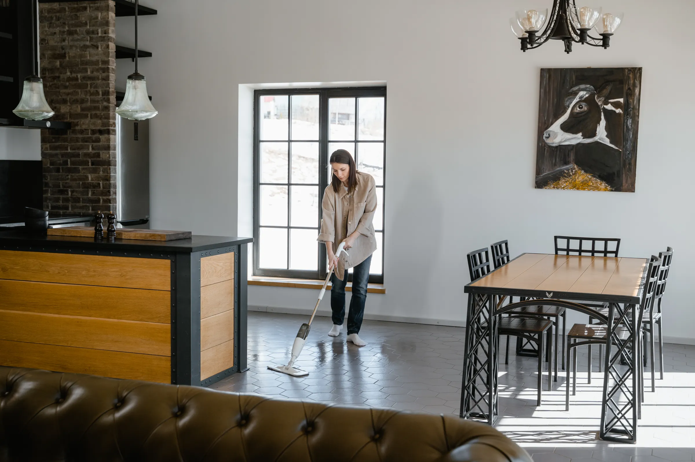

01
Phase One
Pre-Inspection & Material Testing
Every surface is unique. We examine tile composition (glazed ceramic, porcelain, natural stone), test grout porosity, and measure pH tolerance to calibrate our heated solution.
- Identification of sensitive stone (marble, limestone, travertine).
- Identification of cracked tiles or loose grout lines.
- Baseboard and furniture protection with protective runners.